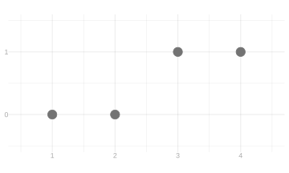
11 What’s Common and What Isn’t
$$ \newcommand{X}{} \newcommand{Y}{} % A hex digit after # inside a macro body is eaten by build-time expansion, so digit-leading hexes spell # via .
$$
To See What’s Easy, Revisit Something Hard
To see what’s easy, we’re going to revisit something hard. How we calculated these distributions in the first place.
How We Got Here
We’re going to draw a sample of size 2 from the population above. Here is the distribution of the total we get, sampling with replacement first and then without.
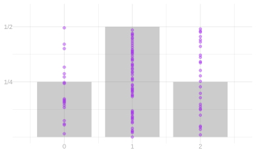
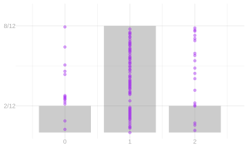
These are distributions we have had for weeks: with replacement the total is binomial, without replacement it is hypergeometric. We did the binomial before, and the hypergeometric; repetition is fine, and here we are taking a different view of them, less tabular and more dimensional, so you can see the relation.
And here is how we got them. List the call sequences. Replace each person called by their response. Add.
Two Calls
Every call sequence is equally likely. That follows from the design; it is not assumed. With replacement, each call is an independent uniform pick, so all sixteen ordered pairs of people are equally likely. Without replacement, the sample is a shuffle, so all twelve ordered pairs of distinct people are.
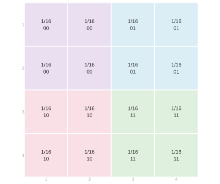
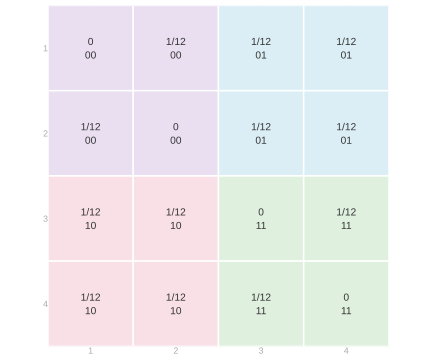
Rows are the first person called and columns the second, so each cell is one call sequence. In the cell is its probability and the pair of responses those two people give, and the color groups the cells by that pair of responses. With replacement, the first grid, every cell is 1/16. Without replacement, the second, the diagonal is impossible and the twelve cells off it are 1/12 each.
The colors stay the same. The probabilities in the grid you’re coloring change.
| J1 | J2 | Y1 | Y2 | With replacement | Without replacement |
|---|---|---|---|---|---|
| 1 | 1 | 0 | 0 | 1/16 | 0 |
| 1 | 2 | 0 | 0 | 1/16 | 1/12 |
| 2 | 1 | 0 | 0 | 1/16 | 1/12 |
| 2 | 2 | 0 | 0 | 1/16 | 0 |
| 1 | 3 | 0 | 1 | 1/16 | 1/12 |
| 1 | 4 | 0 | 1 | 1/16 | 1/12 |
| 2 | 3 | 0 | 1 | 1/16 | 1/12 |
| 2 | 4 | 0 | 1 | 1/16 | 1/12 |
| 3 | 1 | 1 | 0 | 1/16 | 1/12 |
| 3 | 2 | 1 | 0 | 1/16 | 1/12 |
| 4 | 1 | 1 | 0 | 1/16 | 1/12 |
| 4 | 2 | 1 | 0 | 1/16 | 1/12 |
| 3 | 3 | 1 | 1 | 1/16 | 0 |
| 3 | 4 | 1 | 1 | 1/16 | 1/12 |
| 4 | 3 | 1 | 1 | 1/16 | 1/12 |
| 4 | 4 | 1 | 1 | 1/16 | 0 |
The table is the same sixteen call sequences, one column per call, with the two schemes’ probabilities side by side and the rows in the colors of the grid.
Aggregate the colored cells into the response grid. Each block of one color in the call grid is the set of call sequences giving one pair of responses, so each block collapses to a single cell, with rows the first response and columns the second.
Four cells of 1/16 in each block gives 1/4 with replacement; without replacement the blocks are not all the same size, and we get 2/12 where the two responses agree and 4/12 where they differ.
Aggregate the response grid into the distribution of the total above. The two cells where the responses differ both have total 1, so they add together into the middle bar.
Change the Population
Change the population to three zeros and one one, and stay there.
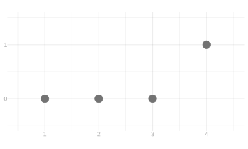
The probabilities are the same; what gets colored changed.
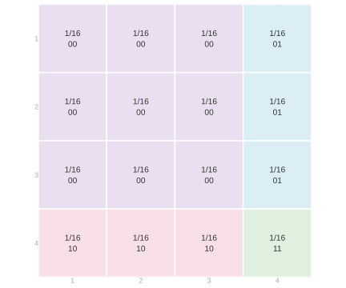
| J1 | J2 | Y1 | Y2 | With replacement | Without replacement |
|---|---|---|---|---|---|
| 1 | 1 | 0 | 0 | 1/16 | 0 |
| 1 | 2 | 0 | 0 | 1/16 | 1/12 |
| 1 | 3 | 0 | 0 | 1/16 | 1/12 |
| 2 | 1 | 0 | 0 | 1/16 | 1/12 |
| 2 | 2 | 0 | 0 | 1/16 | 0 |
| 2 | 3 | 0 | 0 | 1/16 | 1/12 |
| 3 | 1 | 0 | 0 | 1/16 | 1/12 |
| 3 | 2 | 0 | 0 | 1/16 | 1/12 |
| 3 | 3 | 0 | 0 | 1/16 | 0 |
| 1 | 4 | 0 | 1 | 1/16 | 1/12 |
| 2 | 4 | 0 | 1 | 1/16 | 1/12 |
| 3 | 4 | 0 | 1 | 1/16 | 1/12 |
| 4 | 1 | 1 | 0 | 1/16 | 1/12 |
| 4 | 2 | 1 | 0 | 1/16 | 1/12 |
| 4 | 3 | 1 | 0 | 1/16 | 1/12 |
| 4 | 4 | 1 | 1 | 1/16 | 0 |
Nine of the sixteen call sequences now reach a zero twice, and only one reaches the single one twice. Aggregate the colors into the response grid, then the response grid into the total, exactly as before.
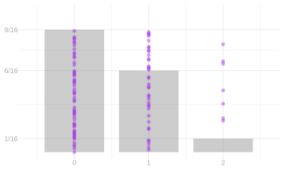
Three Calls, Worked and Skippable
You can do it. We’re going to include it here, but also the whole point is you don’t want to do this. So go ahead and skim this, because no one wants to do this.
Three calls on the same population, with replacement. Each layer fixes the third person called — person 1 in the top layer down to person 4 in the bottom one — and within a layer, rows are the first call and columns the second. The four layers are the third axis.
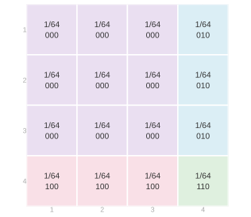


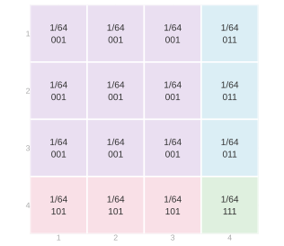
Collect the sixty-four cells by their response sequence.
| Responses | Probability | Total |
|---|---|---|
| 000 | 27/64 | 0 |
| 001 | 9/64 | 1 |
| 010 | 9/64 | 1 |
| 100 | 9/64 | 1 |
| 011 | 3/64 | 2 |
| 101 | 3/64 | 2 |
| 110 | 3/64 | 2 |
| 111 | 1/64 | 3 |
Then collect the response sequences by their total.
| Total | Probability |
|---|---|
| 0 | 27/64 |
| 1 | 27/64 |
| 2 | 9/64 |
| 3 | 1/64 |
One or Two Calls out of Three
Suppose we only want the distribution of one call, or of a pair. Everything is set up, so let’s do it mechanically first.
To get from three calls to two, add across the layers. Fix a first call and a second call: the four cells in that position, one in each layer, are the four possibilities for the third call, and adding them gives 4/64 = 1/16 — the two-call grid back, cell for cell. And nothing picked out the first two calls: fix any pair of the three and add over the remaining one, and the same thing happens.
To get from two calls to one, sum a row or a column.
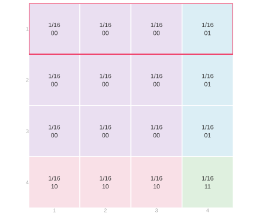
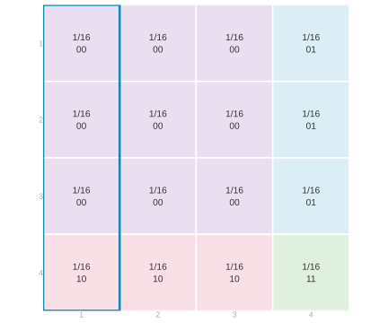
The pink row is every call sequence whose first call is person 1, and it adds to 1/4. The teal column is every sequence whose second call is person 1, and it adds to 1/4 too. The same holds for each of the other three people, and grouping the people by their response turns that into the distribution of one response.
Why you didn’t have to. The first call, obviously. But what’s special about the first? Nothing. That’s the argument.
What’s doing the work is uniformity among all possible call sequences; the possible set varies.
If you could change the distribution of a deck by cutting it, you wouldn’t be allowed to cut it.
There’s a way of understanding that using the physical metaphor, almost obviously. If you’re rolling a die, it doesn’t matter how many times you roll it on each individual roll or each pair of rolls. The same thing’s going to happen. It’s maybe a little less obvious when you shuffle a deck. If you shuffle a deck and draw the top card, or you shuffle a deck and then you cut it and you draw the top card, or the top two or whatever — the cut isn’t going to change the fact that all configurations are equally likely post-cut. And that’s true if you just cut it twice. They don’t have to be consecutive numbers. This isn’t a universal phenomenon. You can design schemes that are not like this. But these, and most things we work with, have this property.
And this isn’t something that’s buried in a physical metaphor. It’s in the math. If all sequences are equally likely, then any pair of slots will have the subsequences in those pairs being equally likely. Otherwise the whole premise was false.
The calculation was a painstaking way of seeing that. The calculation is useful to get the distribution of the sum. But the calculation just to get down to a smaller sample size — didn’t really have to do it. It just falls out of the principle of the thing. From sequences to subsequences.
What Can This Do for Us?
So the point is, if we just want to know the distribution of one or two things, that’s great. Because that’s not an overwhelming problem. But what can this do for us?
The rules, on the grid
Everything we do with these pictures rests on two rules, and you can read both off the grid.
- No cell is negative. A probability is never less than zero.
- To find the probability that one of two things happens, add their probabilities — as long as both can’t happen at once.
The second one is why adding up a color works. The four cells in a color are four different call sequences; exactly one of them happens; so the probability of hearing that pair of responses is the sum of the four. Here are the same sixteen cells as rows, in the same colors, with both schemes’ probabilities side by side.
| J1 | J2 | Y1 | Y2 | With replacement | Without replacement |
|---|---|---|---|---|---|
| 1 | 1 | 0 | 0 | 1/16 | 0 |
| 1 | 2 | 0 | 0 | 1/16 | 1/12 |
| 2 | 1 | 0 | 0 | 1/16 | 1/12 |
| 2 | 2 | 0 | 0 | 1/16 | 0 |
| 1 | 3 | 0 | 1 | 1/16 | 1/12 |
| 1 | 4 | 0 | 1 | 1/16 | 1/12 |
| 2 | 3 | 0 | 1 | 1/16 | 1/12 |
| 2 | 4 | 0 | 1 | 1/16 | 1/12 |
| 3 | 1 | 1 | 0 | 1/16 | 1/12 |
| 3 | 2 | 1 | 0 | 1/16 | 1/12 |
| 4 | 1 | 1 | 0 | 1/16 | 1/12 |
| 4 | 2 | 1 | 0 | 1/16 | 1/12 |
| 3 | 3 | 1 | 1 | 1/16 | 0 |
| 3 | 4 | 1 | 1 | 1/16 | 1/12 |
| 4 | 3 | 1 | 1 | 1/16 | 1/12 |
| 4 | 4 | 1 | 1 | 1/16 | 0 |
Adding up the rows of one color is the same arithmetic as adding up a block of the grid.
What you cannot do is count a cell twice. Suppose you want the probability that the first call reaches a voter or the second one does. The first of those is two rows of the grid, the second is two columns, and four cells sit in both — the ones where both calls reach a voter. Add the rows to the columns and you have counted those four twice. The rule needs the two sets of cells to have nothing in common; the word for that is disjoint.
A third design
Here is one you have no formula for. Arrange the four people in a circle, pick a starting person at random, and call them and the next one round.
Four live cells out of sixteen, a quarter each, because there are only four places to start. It is a stranger grid than either of the others and we have written no formula for its totals.
Add across a row. It is 1/4.
Random variables
We have been drawing three things and calling them by their columns: which person a call reaches, the response it gets, and the total. They get names now, because we are about to talk about two of them at once.
Write J_1 for the person the first call reaches and J_2 for the second; Y_1 and Y_2 for the responses; Y_1+Y_2 for the total. Each of these is a random variable — a thing whose value is determined by how the sampling comes out, and which therefore has a distribution. The grids above are the joint distribution of J_1 and J_2, and of Y_1 and Y_2.
Independence
The margins were the same in all three designs. The grids were not, and the difference has a name.
Stay with the population that has one voter, and put its two response grids next to each other — with replacement first, then without.

In both of them each response is a Yes with probability 1/4: add the bottom row of either grid. The margins are identical. Now look inside.
With replacement, the probability that both are Yes is 1/16, which is (1/4)\times(1/4) — the product of the two margins. Check another cell: 3/16 is (3/4)\times(1/4). And 9/16 is (3/4)\times(3/4). Every cell is the product of its two margins.
Without replacement, the probability that both are Yes is zero, where the product still says 1/16. There is only one voter to reach, so hearing Yes twice is impossible — and the margins never knew that.
When every cell of the joint distribution is the product of its two margins, the two random variables are independent. When some cell isn’t, they are dependent. Sampling with replacement gives you independent calls; sampling without replacement does not.
Notice what that means about the margins. Knowing the distribution of each call separately does not tell you which of these grids you are in. The margins are what all three designs share, and the joint is where they differ, so the joint is where you have to look when a question is about two calls at once.
Doing it full size
You can do all of this with more calls. You don’t want to, and you don’t have to — skim this.
For three calls the grid becomes a stack of grids, one layer for each third person.


Sixty-four cells, and the same two stages: collect by response sequence, then collect by total. It works, it is tedious, and the tedium is the point — this is what you are avoiding.
And if what you want is one call, or a pair of calls, out of however many you made, you do not have to build the big thing first. Add over the calls you are not asking about and you are back to a grid you already have. Any pair of calls gives you the two-call grid; any single call gives you 1/4. Nothing in the counting ever cared which calls they were.